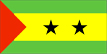
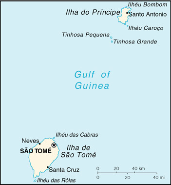

{kind=link}


| Sao Tome and Principe |  |
|
|
 | |
| Introduction |
Background: Discovered and claimed by Portugal in the late 15th century, the islands' sugar-based economy gave way to coffee and cocoa in the 19th century - all grown with plantation slave labor, a form of which lingered into the 20th century. Although independence was achieved in 1975, democratic reforms were not instituted until the late 1980s. The first free elections were held in 1991.
| Geography |
Location: Western Africa, islands in the Gulf of Guinea, straddling the Equator, west of Gabon
Geographic coordinates: 1 00 N, 7 00 E
Map references: Africa
Area:
total:
1,001 sq km
land:
1,001 sq km
water:
0 sq km
Area - comparative: more than five times the size of Washington, DC
Land boundaries: 0 km
Coastline: 209 km
Maritime claims:
measured from claimed archipelagic baselines
exclusive economic zone:
200 nm
territorial sea:
12 nm
Climate: tropical; hot, humid; one rainy season (October to May)
Terrain: volcanic, mountainous
Elevation extremes:
lowest point:
Atlantic Ocean 0 m
highest point:
Pico de Sao Tome 2,024 m
Natural resources: fish, hydropower
Land use:
arable land:
2%
permanent crops:
36%
permanent pastures:
1%
forests and woodland:
0%
other:
61% (1993 est.)
Irrigated land: 100 sq km (1993 est.)
Natural hazards: NA
Environment - current issues: deforestation; soil erosion and exhaustion
Environment - international agreements:
party to:
Biodiversity, Climate Change, Desertification, Environmental Modification, Law of the Sea, Ship Pollution
signed, but not ratified:
none of the selected agreements
| People |
Population: 159,883 (July 2000 est.)
Age structure:
0-14 years:
48% (male 38,588; female 37,624)
15-64 years:
48% (male 37,216; female 39,959)
65 years and over:
4% (male 2,961; female 3,535) (2000 est.)
Population growth rate: 3.16% (2000 est.)
Birth rate: 42.98 births/1,000 population (2000 est.)
Death rate: 7.76 deaths/1,000 population (2000 est.)
Net migration rate: -3.62 migrant(s)/1,000 population (2000 est.)
Sex ratio:
at birth:
1.03 male(s)/female
under 15 years:
1.03 male(s)/female
15-64 years:
0.93 male(s)/female
65 years and over:
0.84 male(s)/female
total population:
0.97 male(s)/female (2000 est.)
Infant mortality rate: 50.41 deaths/1,000 live births (2000 est.)
Life expectancy at birth:
total population:
65.25 years
male:
63.84 years
female:
66.7 years (2000 est.)
Total fertility rate: 6.08 children born/woman (2000 est.)
Nationality:
noun:
Sao Tomean(s)
adjective:
Sao Tomean
Ethnic groups: mestico, angolares (descendants of Angolan slaves), forros (descendants of freed slaves), servicais (contract laborers from Angola, Mozambique, and Cape Verde), tongas (children of servicais born on the islands), Europeans (primarily Portuguese)
Religions: Christian 80% (Roman Catholic, Evangelical Protestant, Seventh-Day Adventist)
Languages: Portuguese (official)
Literacy:
definition:
age 15 and over can read and write
total population:
73%
male:
85%
female:
62% (1991 est.)
| Government |
Country name:
conventional long form:
Democratic Republic of Sao Tome and Principe
conventional short form:
Sao Tome and Principe
local long form:
Republica Democratica de Sao Tome e Principe
local short form:
Sao Tome e Principe
Data code: TP
Government type: republic
Capital: Sao Tome
Administrative divisions:
2 provinces; Principe, Sao Tome
note:
Principe has had self-government since 29 April 1995
Independence: 12 July 1975 (from Portugal)
National holiday: Independence Day, 12 July (1975)
Constitution: approved March 1990; effective 10 September 1990
Legal system: based on Portuguese legal system and customary law; has not accepted compulsory ICJ jurisdiction
Suffrage: 18 years of age; universal
Executive branch:
chief of state:
President Miguel TROVOADA (since 4 April 1991)
head of government:
Prime Minister Guilherma Posser da COSTA (since 30 December 1998)
cabinet:
Council of Ministers appointed by the president on the proposal of the prime minister
elections:
president elected by popular vote for a five-year term; election last held 30 June and 21 July 1996 (next to be held NA July 2001); prime minister chosen by the National Assembly and approved by the president
election results:
Miguel TROVOADA reelected president in Sao Tome's second multiparty presidential election; percent of vote - Miguel TROVOADA 52.74%, Manuel Pinto da COSTA 47.26%
Legislative branch:
unicameral National Assembly or Assembleia Nacional (55 seats; members are elected by direct popular vote to serve five-year terms)
elections:
last held 8 November 1998 (next to be held NA November 2003)
election results:
percent of vote by party - MLSTP-PSD 56%, PCD 14.5%, ADI 29%; seats by party - MLSTP-PSD 31, ADI 16, PCD 8
Judicial branch: Supreme Court, judges are appointed by the National Assembly
Political parties and leaders: Christian Democratic Front or FDC [Alphonse Dos SANTOS]; Democratic Opposition Coalition or CODO [leader NA]; Independent Democratic Action or ADI [Carlos NEVES]; Movement for the Liberation of Sao Tome and Principe-Social Democratic Party or MLSTP-PSD [Manuel Pinto Da COSTA]; Party for Democratic Convergence or PCD [Armindo AGUIAR, secretary general]; other small parties
International organization participation: ACCT, ACP, AfDB, CEEAC, ECA, FAO, G-77, IBRD, ICAO, ICRM, IDA, IFAD, IFRCS, ILO, IMF, IMO, Intelsat (nonsignatory user), Interpol, IOC, IOM (observer), ITU, NAM, OAU, UN, UNCTAD, UNESCO, UNIDO, UPU, WHO, WIPO, WMO, WToO, WTrO (applicant)
Diplomatic representation in the US: Sao Tome and Principe does not have an embassy in the US, but does have a Permanent Mission to the UN, headed by First Secretary Domingos Augusto FERREIRA, located at 122 East 42nd Street, Suite 1604, New York, NY 10168, telephone [1] (212) 317-0533
Diplomatic representation from the US: the US does not have an embassy in Sao Tome and Principe; the Ambassador to Gabon is accredited to Sao Tome and Principe on a nonresident basis and makes periodic visits to the islands
Flag description: three horizontal bands of green (top), yellow (double width), and green with two black five-pointed stars placed side by side in the center of the yellow band and a red isosceles triangle based on the hoist side; uses the popular pan-African colors of Ethiopia
| Economy |
Economy - overview: This small poor island economy has become increasingly dependent on cocoa since independence 25 years ago. However, cocoa production has substantially declined because of drought and mismanagement. The resulting shortage of cocoa for export has created a persistent balance-of-payments problem. Sao Tome has to import all fuels, most manufactured goods, consumer goods, and a significant amount of food. Over the years, it has been unable to service its external debt and has had to depend on concessional aid and debt rescheduling. Considerable potential exists for development of a tourist industry, and the government has taken steps to expand facilities in recent years. The government also has attempted to reduce price controls and subsidies, but economic growth has remained sluggish. Sao Tome is also optimistic that significant petroleum discoveries are forthcoming in its territorial waters in the oil-rich waters of the Gulf of Guinea. Corruption scandals continue to weaken the economy.
GDP: purchasing power parity - $169 million (1999 est.)
GDP - real growth rate: 1.5% (1999 est.)
GDP - per capita: purchasing power parity - $1,100 (1999 est.)
GDP - composition by sector:
agriculture:
23%
industry:
19%
services:
58% (1997 est.)
Population below poverty line: NA%
Household income or consumption by percentage share:
lowest 10%:
NA%
highest 10%:
NA%
Inflation rate (consumer prices): 10.5% (yearend 1999 est.)
Labor force: NA
Labor force - by occupation:
population mainly engaged in subsistence agriculture and fishing
note:
shortages of skilled workers
Unemployment rate: 50% in the formal business sector (1998 est.)
Budget:
revenues:
$58 million
expenditures:
$114 million, including capital expenditures of $54 million (1993 est.)
Industries: light construction, textiles, soap, beer; fish processing; timber
Industrial production growth rate: NA%
Electricity - production: 15 million kWh (1998)
Electricity - production by source:
fossil fuel:
46.67%
hydro:
53.33%
nuclear:
0%
other:
0% (1998)
Electricity - consumption: 14 million kWh (1998)
Electricity - exports: 0 kWh (1998)
Electricity - imports: 0 kWh (1998)
Agriculture - products: cocoa, coconuts, palm kernels, copra, cinnamon, pepper, coffee, bananas, papayas, beans; poultry; fish
Exports: $4.9 million (f.o.b., 1999 est.)
Exports - commodities: cocoa 90%, copra, coffee, palm oil (1997)
Exports - partners: Netherlands 51%, Germany 6%, Portugal 6% (1997)
Imports: $19.5 million (f.o.b., 1999 est.)
Imports - commodities: machinery and electrical equipment, food products, petroleum products
Imports - partners: Portugal 26%, France 18%, Angola, Belgium, Japan (1997)
Debt - external: $274 million (1998)
Economic aid - recipient: $57.3 million (1995)
Currency: 1 dobra (Db) = 100 centimos
Exchange rates: dobras (Db) per US$1 - 7,200.0 (October 1999), 7,104.05 (1998), 4,552.5 (1997), 2,203.2 (1996), 1,420.3 (1995)
Fiscal year: calendar year
| Communications |
Telephones - main lines in use: 3,000 (1995)
Telephones - mobile cellular: NA
Telephone system:
domestic:
minimal system
international:
satellite earth station - 1 Intelsat (Atlantic Ocean)
Radio broadcast stations: AM 2, FM 4, shortwave 0 (1998)
Radios: 38,000 (1997)
Television broadcast stations: 2 (1997)
Televisions: 23,000 (1997)
Internet Service Providers (ISPs): NA
| Transportation |
Railways: 0 km
Highways:
total:
320 km
paved:
218 km
unpaved:
102 km (1996 est.)
Ports and harbors: Santo Antonio, Sao Tome
Merchant marine:
total:
9 ships (1,000 GRT or over) totaling 43,587 GRT/34,802 DWT
ships by type:
cargo 4, container 1, refrigerated cargo 1, roll-on/roll-off 3 (1999 est.)
Airports: 2 (1999 est.)
Airports - with paved runways:
total:
2
1,524 to 2,437 m:
1
914 to 1,523 m:
1 (1999 est.)
| Military |
Military branches: Army, Navy, Security Police
Military manpower - availability:
males age 15-49:
32,933 (2000 est.)
Military manpower - fit for military service:
males age 15-49:
17,391 (2000 est.)
Military expenditures - dollar figure: $1 million (FY94)
Military expenditures - percent of GDP: 1.5% (FY94)
| Transnational Issues |
Disputes - international: none